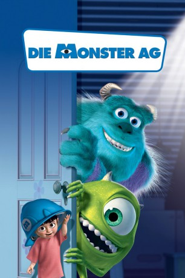

Alternativ: Monsters, Inc.
Auszeichnungen: 1 Oscars gewonnen für 3 Oscars nominiert 1 BAFTA-Awards gewonnen gesehen am 18.03.2015
gesehen am 18.03.2015
 
 IMDB-Wertung: 8.1 / 10
IMDB-Wertung: 8.1 / 10  IMDB-TOP-Platzierung: 223
IMDB-TOP-Platzierung: 223  Metascore:
Metascore: 
In der Monster-AG-Fabrik gehen die Bösewichte eifrig ihrer Arbeit nach: Über Schranktüren schleichen sie sich in Kinderzimmer ein und sammeln die Angstschreie ihrer Bewohner, die den Strom für Monstropolis liefern. Ungekrönter Star unter den einfallsreichen "Schreckeinjagern" ist Sully. Dem passiert eines Tages ein folgenschweres Missgeschick: Das kleine Mädchen Boo, dem er wie gewohnt einen kräftigen Schock versetzen will, verkrallt sich in sein Fell. Als er dann mit dem Kind in die Fabrik zurückkehrt, bricht das totale Chaos aus...
Jahr: 2001
Dauer: 92 Minuten
FSK: 6
Land: USA Studio: Buena Vista PicturesTonspuren: DD5.1 - ,
Untertitel:
Auflösung: 1080p (1920x1040) Größe: 4986 MB
Genre: Animation/Trick, Abenteuer, Komödie, Familie, Fantasy
Regisseur: Pete Docter, David Silverman, Lee Unkrich
Drehbuch: Pete Docter, Jill Culton, Jeff Pidgeon, Ralph Eggleston, Andrew Stanton
Soundtrack: Randy Newman
Darsteller:
 John Goodman als James P.
John Goodman als James P.  Billy Crystal als Mike Wazowski
Billy Crystal als Mike Wazowski Steve Buscemi als Randall Boggs
Steve Buscemi als Randall Boggs James Coburn als Henry J. Waternoose
James Coburn als Henry J. Waternoose Jennifer Tilly als Celia
Jennifer Tilly als Celia Bob Peterson als Roz
Bob Peterson als Roz John Ratzenberger als The Abominable Snowman
John Ratzenberger als The Abominable Snowman Frank Oz als Fungus
Frank Oz als Fungus Bonnie Hunt als Flint
Bonnie Hunt als Flint Jeff Pidgeon als Bile
Jeff Pidgeon als Bile Bob Bergen als Additional Voices
Bob Bergen als Additional Voices Rodger Bumpass als Additional Voices
Rodger Bumpass als Additional Voices Ashley Edner als Additional Voices
Ashley Edner als Additional Voices Paul Eiding als Additional Voices
Paul Eiding als Additional Voices Bill Farmer als Additional Voices
Bill Farmer als Additional Voices Pat Fraley als Additional Voices
Pat Fraley als Additional Voices Teresa Ganzel als Additional Voices
Teresa Ganzel als Additional Voices Sherry Lynn als Additional Voices
Sherry Lynn als Additional Voices Laraine Newman als Additional Voices
Laraine Newman als Additional Voices Phil Proctor als Charlie
Phil Proctor als Charlie Joe Ranft als Additional Voices
Joe Ranft als Additional Voices Lee Unkrich als Additional Voices
Lee Unkrich als Additional Voices Wallace Shawn als Rex, outtakes , uncredited
Wallace Shawn als Rex, outtakes , uncredited Jack Angel als Additional Voices
Jack Angel als Additional Voices Jennifer Darling als Additional Voices
Jennifer Darling als Additional Voices Mona Marshall als Additional Voices
Mona Marshall als Additional Voices Jan Rabson als Additional Voices
Jan Rabson als Additional VoicesDatei: X:\Kinder Disney HD\Monster AG\Monster AG, Die (2001, FSK6, 1920x1040) 3D.mkv seit 02.03.2015
Festplatte: Kinder-Filme+Trick
 Alle Filme aus Gruppe 'Kinder Disney HD\Monster AG'
Alle Filme aus Gruppe 'Kinder Disney HD\Monster AG'
(der aktuelle Film)